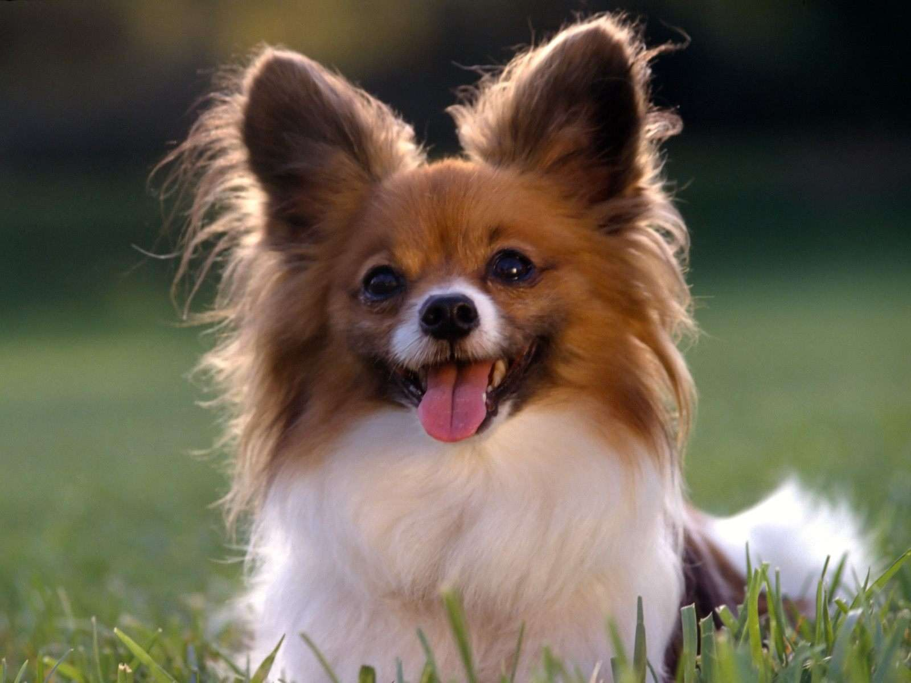

Услуги ветеринарной клиники
Био
Экспресс-анализы, прививки, справки, комплексные исследования, УЗИ, рентген, хирургия, экстренная помощь для домашних кошек, собак, грызунов и других питомцев. Современные методы лечения домашних животных в Казани.
Для собак
Экспресс-анализы, прививки, справки, комплексные исследования, УЗИ, рентген, хирургия, экстренная помощь для домашних кошек, собак, грызунов и других питомцев. Современные методы лечения домашних животных в Казани.

Для кошек
Обследование, стерилизация, кастрация, прививки и вакцинация, операции, УЗИ сердца и другие услуги для домашних кошек и котов

Для домашних птиц
Экстренная помощь, лечение, восстановление, операции, хирургия для попугаев, канареек и других домашних птиц
© Skillfactory